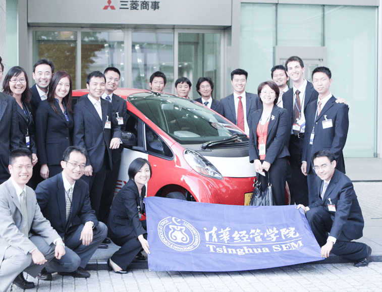

职业发展中心
职业发展中心（Career Development Center, CDC）是清华大学经济管理学院的职能部门，负责本院学生（MBA学生、本科生和硕士生）的职业指导工作，为用人单位提供招聘支持。
查看更多
职业发展中心（Career Development Center, CDC）是清华大学经济管理学院的职能部门，负责本院学生（MBA学生、本科生和硕士生）的职业指导工作，为用人单位提供招聘支持。
查看更多2012年11月22日下午，清华大学经济管理学院2午，清华大学经济管理学院2午，清华大学经济管理学院2010级本科生暑期社会实践总结汇报会在经管学院多功能厅举行。本次暑期社会实践活动围绕中国农村金融与...
2012年11月22日下午，清华大学three_cut科生暑期社会实践总结汇学three_cut科生暑期社会实践总结汇学three_cut科生暑期社会实践总结汇社会实践总结汇报会在经管学院多功能厅举行。本次暑期社会实践活动围绕中国农村金融与...
2012年11月22日下午，清华大学经济管理学院2010级本科生暑期社会实践总结汇报会在经管学院多功能厅举行。本次暑期社会实践活动围绕中国农村金融与...
2012年11月22日下午，清华大学经济管理学院2010级本科生暑期社会实践总结汇报会在经管学院多功能厅举行。本次暑期社会实践活动围绕中国农村金融与...